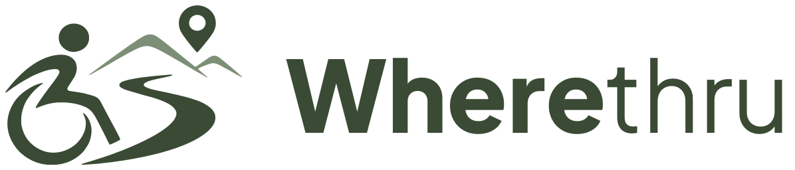

STENT-IN 2026 · VŠTE a OTH Regensburg
O projektu
Wherethru je platforma pro bezbariérové cestování. Začínáme v jižních Čechách a v Bavorsku. Záměr připravují studenti Vysoké školy technické a ekonomické v Českých Budějovicích a Ostbayerische Technische Hochschule Regensburg v programu STENT-IN.


Objevuj · Plánuj · Zažij – bez bariér
Značka Wherethru nahrazuje pracovní název kudyprojedu.cz. Projekt a tým zůstávají stejné.
Problém
„Bezbariérové“ nestačí
Když člověk na vozíku plánuje výlet, nocleh nebo jen oběd, potřebuje vědět konkrétní věci. Je u vstupu schod a jak vysoký? Projede dveřmi? Má toaleta dost místa na otočení? Je kde zaparkovat?
Tyhle informace jsou dnes rozházené po webech hotelů, brožurách a facebookových skupinách. Často je tam jen nálepka „bezbariérové“, bez rozměrů a bez data, kdy to někdo naposledy ověřil. Většina lidí proto stejně volá a ptá se.
-
Proč jižní Čechy a Bavorsko
Program STENT-IN podporuje přeshraniční podnikání mezi jižními Čechami a Bavorskem v rámci Interreg Bavorsko–Česko. Jeden web pro obě strany hranice pomůže domácím i zahraničním návštěvníkům. Data už máme pro celé Česko i Bavorsko, ale ověřování, partnery a průvodce začínáme tady.
-
Komu to pomáhá
- lidem na vozíku a s omezenou pohyblivostí
- seniorům a lidem s dočasným omezením, třeba po úrazu
- rodinám, asistentům a spolucestujícím, kteří cestu plánují za někoho
- hotelům, restauracím, památkám a kulturním institucím
- obcím, krajům a organizacím cestovního ruchu
Vize
Naplánovat cestu z jednoho místa, podle sebe
Chceme, aby člověk s omezenou pohyblivostí našel a naplánoval výlet nebo dovolenou podle svých potřeb, bez obvolávání hotelů a restaurací. Otázka se tím mění z „je to bezbariérové?“ na „hodí se to právě pro mě?“.
Platforma spojuje dvě strany: lidi, kteří potřebují spolehlivé informace o přístupnosti, a podniky a instituce, které je chtějí poskytnout a zlepšit. Dlouhodobě chceme podniky a úřady motivovat, aby byly přístupnější.
Cíle
Funkční MVP a spolehlivá data
Mapa, profily míst a vyhledávání podle konkrétních potřeb. U každého údaje zdroj a datum.
Regionální partneři
Spolupráce s obcemi, organizacemi cestovního ruchu, organizacemi lidí s postižením a podniky v jižních Čechách a v Bavorsku.
Více ověřených míst
Postupně přidávat ověřené údaje: od provozovatelů, od komunity a nezávislým ověřením.
Důvěryhodná značka
Růst postupně. Kvalita a důvěryhodnost dat má přednost před rychlým rozšiřováním do dalších regionů.
Tým
Kdo za projektem stojí
Business Model Canvas, verze 1.1, říjen 2026.
- Houdková
- Šestáková
- Šesták
- Rozporka
VŠTE České Budějovice
Podnikatelský plán, průzkum trhu, česká data a partneři v Jihočeském kraji.
OTH Regensburg
Bavorská strana: německý trh, systém Reisen für Alle a partneři v cestovním ruchu.
STENT-IN
Program Interreg Bavorsko–Česko spolufinancovaný Evropskou unií. Prezentace záměru 9. 12. 2026, soutěž 17. a 18. 12. 2026.
Plán rozvoje
Fáze rozvoje: nezačínáme se vším najednou
Nejdřív musí fungovat mapa a spolehlivá data. Placené služby zavedeme postupně, až ověříme poptávku, kapacitu týmu a právní požadavky.
-
Fáze 1 teď
MVP: mapa a profily míst
Základ, na kterém se dá ověřit, jestli lidé platformu používají.
- interaktivní mapa a databáze míst v Česku a v Bavorsku
- strukturovaný profil místa: vstup, toaleta, parkování, pokoj, fotky, zdroj a datum údaje
- vyhledávání a filtry podle konkrétních potřeb
- čeština a němčina, k tomu angličtina
-
Fáze 2
Komunita a podniky
- recenze, fotky a potvrzování údajů od návštěvníků, hlášení změn
- převzetí profilu provozovatelem a kontrolní seznam přístupnosti
- volitelné ověření a poradenství, spolupráce s obcemi a regionálními partnery
-
Fáze 3
Explorer, Traveller a plánovače
- Accessibility Match podle osobního profilu požadavků
- plánovač jednodenních výletů a uložené itineráře
- vícedenní plánování, itineráře ke stažení
- pilotní předplatné a testování cen, měsíční a roční platby, krátkodobý travel pass
-
Fáze 4
Průvodci, akce a provize
- hotoví průvodci po jižních Čechách a Bavorsku a plánování na míru
- bezbariérové akce, workshopy a výlety s kvalifikovanými partnery
- provize z rezervací, mobilní aplikace podle zájmu uživatelů
V prototypu si už můžete vyzkoušet části dalších fází, třeba recenze, profil podniku nebo členství Explorer a Traveller. Všechno běží jen ve vašem prohlížeči a nic se neplatí.
Model příjmů
Z čeho bude platforma žít
Podle Business Model Canvasu. Více zdrojů příjmů snižuje závislost na jedné skupině zákazníků a chrání veřejně prospěšnou část.
Členství Free, Explorer a TravellerZdarma
- základní informace o přístupnosti a komunita
- základní profily podniků a opravy údajů
Lidé, kteří cestují
- předplatné Explorer a Traveller
- hotoví průvodci a plánování na míru
Akce
- placené workshopy, výlety a vstupenky
Podniky a instituce
- předplatné a analytika pro podniky
- ověření, školení a poradenství
- regionální licence a řešení pro instituce
Později
- provize z rezervací a doporučení
Placená viditelnost bude vždy oddělená od nezávislého hodnocení přístupnosti. Základní informace o přístupnosti a jejich opravy nikdy nebudou záviset na platbě.
Každý zdroj příjmů zavedeme, až ověříme poptávku, kapacitu týmu a právní požadavky. Ceny ověříme v rozhovorech se zákazníky a v pilotním předplatném.
Rizika
Na co si dáváme pozor
Aktuální data
Údaje o přístupnosti stárnou. Proto u každého ukazujeme zdroj a datum a dáváme snadnou cestu k opravě.
Dost uživatelů i podniků
Platforma má dvě strany a potřebuje obě. Pomoci mají regionální partneři a organizace lidí s postižením.
Financování začátku
Než se placené služby ověří, musí projekt fungovat s nízkými náklady a postupně.
Služby, které dělají lidé
Ověřování, concierge a akce stojí čas lidí. Budou mít jasné limity a u akcí a výletů posoudíme pojištění, ochranu spotřebitele a pravidla pro zájezdy.
Prototyp
Co je na webu skutečné a co ještě ne
Tento web je studentský prototyp. Místa a údaje o přístupnosti v mapě jsou skutečná. Pocházejí z OpenStreetMap a z otevřených dat měst a institucí, stažených 5. 10. 2026 pro Česko a 7. 10. 2026 pro Bavorsko. Nic jsme nevymýšleli ani nedopočítávali.
| Část webu | Stav |
|---|---|
| Místa, vstup, toaleta, parkování | skutečná data OpenStreetMap a otevřená data, zdroj u každého údaje |
| Fotky u míst | skutečné jen tam, kde je v OpenStreetMap odkaz na Wikimedia Commons; jinak odkaz na Google Street View |
| Navigace a mapa | funguje přes Google Maps a OpenStreetMap |
| Členství Explorer a Traveller | prototyp úroveň se jen přepne v prohlížeči, platby ani účty neexistují |
| Plánovač výletů | prototyp návrh sestavený podle pravidel nad skutečnými daty, v ostré verzi s AI |
| Komunita, recenze, profily podniků | prototyp ukládá se jen ve vašem prohlížeči, nezobrazujeme žádné vymyšlené recenze ani uživatele |
| Ověření na místě | zatím ne žádné místo jsme zatím sami neměřili |
| Akce, průvodci, partneři | připravujeme nevypisujeme žádné termíny, slevy ani partnery, dokud nejsou sjednané |
| Němčina a angličtina | funguje přepínač CZ / DE / EN v hlavičce; názvy míst, adresy a citace z webů zůstávají v originále |
Údaje v OpenStreetMap zadávají dobrovolníci a nemusí být úplné ani aktuální. Proto u každého místa ukazujeme datum poslední úpravy a odkaz, kde se dá údaj opravit. Před cestou doporučujeme důležité věci ověřit u provozovatele.
Mapová data © přispěvatelé OpenStreetMap, dostupná pod licencí Open Database License.